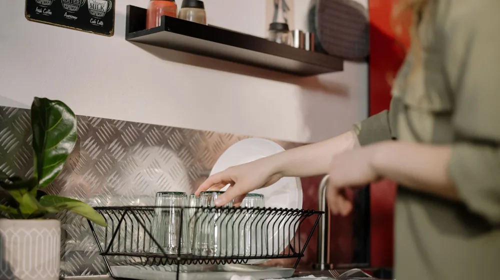

좁은 주방 2배 넓게 쓰는 수납 아이디어 4가지 정리
사진: RDNE Stock project / Pexels (무료 이미지, 출처 표기)
좁은 주방, 공간이 부족한 진짜 이유와 해결책

주방이 좁아 요리할 때마다 스트레스를 받으시나요? 꺼내기 힘든 깊은 곳의 냄비, 조리대 위를 가득 채운 양념통을 보면 한숨이 나오곤 합니다. 제한된 공간을 넓힐 수는 없지만 수납 방식을 바꾸면 공간을 2배 더 넓게 쓸 수 있습니다. 지금 바로 실천할 수 있는 실용적인 좁은 주방 수납 아이디어를 정리해 드립니다.
1단계: 필요 없는 물건 비우기와 사용 빈도별 분류
수납의 시작은 보관이 아니라 비우기입니다. 1년 동안 한 번도 쓰지 않은 그릇이나 프라이팬, 유통기한이 지난 양념은 과감히 정리하세요. 그 후 남은 물건들을 매일 쓰는 식기, 가끔 쓰는 손님용 그릇, 계절 가전으로 분류합니다. 자주 쓰는 물건은 눈높이와 손이 잘 닿는 '골든 존'에 배치해야 조리 동선이 편리해집니다.
2단계: 벽면과 공중 공간을 활용한 '공중부양' 수납법
바닥이나 조리대 위에 물건을 올려두면 주방은 더 좁아 보입니다. 이때 벽면을 활용하는 '공중부양' 수납이 답이 될 수 있습니다. 벽면에 타공판(구멍이 뚫려 있어 고리를 걸 수 있는 정리판)을 설치하거나 자석 칼걸이를 활용해 보세요. 자주 쓰는 국자, 가위, 턴오버(뒤집개) 등을 벽에 걸어두면 꺼내 쓰기도 쉽고 조리대 공간도 확보됩니다.
3단계: 싱크대 하부장과 데드스페이스 살리기
싱크대 아래 하부장은 배수관 때문에 수납이 까다로운 대표적인 데드스페이스(사용하지 못하고 낭비되는 빈 공간)입니다. 이 공간에는 배수관을 피해서 가로 길이와 높이를 조절할 수 있는 '싱크대 하부장 전용 랙'을 설치하는 것이 좋습니다. 깊이가 깊어 안쪽 물건을 꺼내기 힘들다면 슬라이딩 방식의 서랍형 수납함을 넣어 안쪽 공간까지 알차게 활용해 보세요.
나에게 맞는 주방 수납 용품 비교 분석
주방 수납 도구는 무작정 구매하기보다 공간의 특성과 내 라이프스타일에 맞게 선택해야 이중 지출을 막을 수 있습니다.
위 표를 참고하여 우리 집 주방 구조에 가장 필요한 도구부터 차근차근 도입해 보시길 바랍니다.
지속 가능한 주방 유지를 위한 실천 체크리스트
수납공간을 확보한 후에는 이를 유지하는 습관이 중요합니다. 아래의 체크리스트를 통해 매일 깨끗하고 넓은 주방을 유지해 보세요.
- 1인 1기 원칙: 새로운 조리 도구를 사면 오래된 도구 하나는 버리기
- 조리대 위 비우기: 하루 일과가 끝나면 조리대 위에는 아무것도 남기지 않고 닦아두기
- 세로 수납 적용: 접시나 프라이팬은 겹쳐 쌓지 말고 전용 랙을 사용해 세로로 세워서 보관하기
- 주기적인 점검: 분기별로 한 번씩 유통기한이 지난 식품이나 쓰지 않는 용기 비우기
공간이 좁을수록 수납 도구의 힘이 빛을 발합니다. 오늘 정리해 드린 팁 중 당장 실천할 수 있는 한 가지부터 시작하여 요리가 즐거워지는 주방을 만들어 보세요.
🔗 이 글도 함께 보면 좋아요: 맨날 생기는 벽지 곰팡이, 확실히 뿌리 뽑는 3단계 제거법
관련 추천 상품
이 포스팅은 쿠팡 파트너스 활동의 일환으로, 이에 따른 일정액의 수수료를 제공받습니다.
한눈에 보는 상품 목록
싱크대 하부장 조절식 선반
인출식 슬라이딩 양념 랙
무타공 벽면 타공판 세트